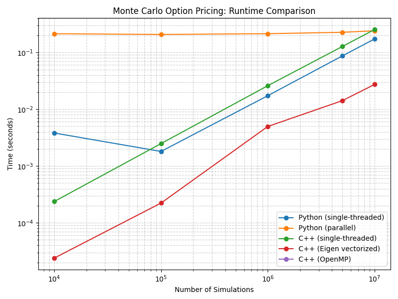

Overview
Monte Carlo simulation is a powerful technique for pricing options and other derivatives by simulating random price paths. Computational speed is crucial, especially for large numbers of simulations. Here, we compare Python (single-threaded and parallel), C++ (single-threaded), and C++ (Eigen vectorized) implementations.
Mathematical Model
where \( Z \sim N(0,1) \).
C++ Code (Single-threaded)
#include <iostream>
#include <random>
#include <cmath>
#include <chrono>
int main(int argc, char* argv[]) {
double S0 = 100, K = 100, r = 0.05, sigma = 0.2, T = 1.0;
int N = 10000000;
if (argc > 1) N = std::stoi(argv[1]);
std::mt19937 gen(42);
std::normal_distribution<> dist(0.0, 1.0);
double payoff_sum = 0.0;
auto start = std::chrono::high_resolution_clock::now();
for (int i = 0; i < N; ++i) {
double Z = dist(gen);
double ST = S0 * std::exp((r - 0.5 * sigma * sigma) * T + sigma * std::sqrt(T) * Z);
double payoff = std::max(ST - K, 0.0);
payoff_sum += payoff;
}
double price = std::exp(-r * T) * (payoff_sum / N);
auto end = std::chrono::high_resolution_clock::now();
std::chrono::duration<double> elapsed = end - start;
std::cout << "C++ (single): Price = " << price << ", Time = " << elapsed.count() << "s\n";
return 0;
}
C++ Code (Eigen Vectorized)
#include <iostream>
#include <Eigen/Dense>
#include <random>
#include <chrono>
int main(int argc, char* argv[]) {
using namespace Eigen;
double S0 = 100, K = 100, r = 0.05, sigma = 0.2, T = 1.0;
int N = 10000000;
if (argc > 1) N = std::stoi(argv[1]);
std::mt19937 gen(42);
std::normal_distribution<> dist(0.0, 1.0);
ArrayXd Z(N);
for (int i = 0; i < N; ++i) Z[i] = dist(gen);
auto start = std::chrono::high_resolution_clock::now();
ArrayXd ST = S0 * ((r - 0.5 * sigma * sigma) * T + sigma * std::sqrt(T) * Z).exp();
ArrayXd payoff = (ST - K).max(0.0);
double price = std::exp(-r * T) * payoff.mean();
auto end = std::chrono::high_resolution_clock::now();
std::chrono::duration<double> elapsed = end - start;
std::cout << "C++ (Eigen vectorized): Price = " << price << ", Time = " << elapsed.count() << "s\n";
return 0;
}
Python Code
import numpy as np
import time
S0, K, r, sigma, T, N = 100, 100, 0.05, 0.2, 1.0, 10_000_000
start = time.time()
Z = np.random.normal(0, 1, N)
ST = S0 * np.exp((r - 0.5 * sigma**2) * T + sigma * np.sqrt(T) * Z)
payoff = np.maximum(ST - K, 0)
price = np.exp(-r * T) * np.mean(payoff)
print(f"Python: Price = {price:.2f}, Time = {time.time() - start:.2f}s")
Benchmarking Methodology
For a fair comparison, the runtime for each implementation is measured inside the C++ and Python code, not from the outside. The Python benchmarking script runs each executable with the desired number of iterations, parses the computation time from the program's output, and plots the results. This avoids including process startup overhead and ensures the timing reflects only the computation.
Results

Observations:
- C++ (Eigen vectorized) is the fastest for all simulation sizes, thanks to vectorized operations.
- C++ (single-threaded) is significantly faster than Python, but slower than Eigen.
- Python (single-threaded) is slowest, but vectorized numpy operations make it competitive for moderate sizes.
- Python (parallel) does not scale well due to process overhead and memory bandwidth limits.
Note: OpenMP (parallel C++) is not included due to lack of OpenMP support in the default macOS Clang compiler. If you use GCC with OpenMP, you may see even faster results for parallel C++.